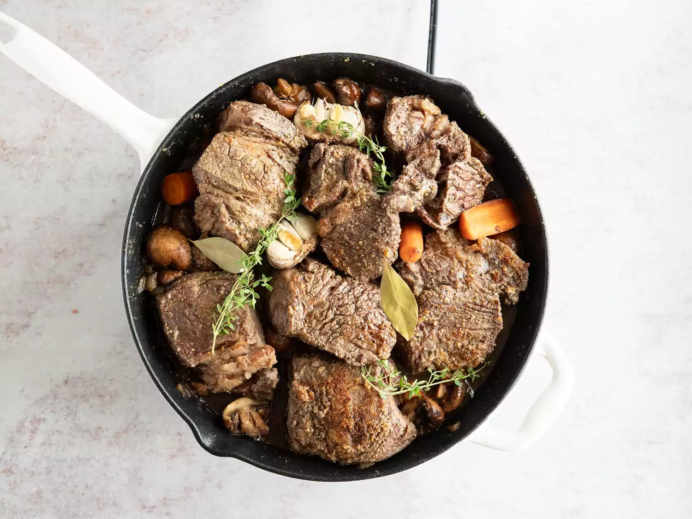

braised beef

Braising is a cooking method that involves slowly cooking meat in a covered pot with some sort of liquid. In the case of this recipe, chuck roast is braised in a mixture of beef broth and red wine. Braising is similar to stewing, but it requires less liquid.
ingredients
- 3.5 pound beef chuck roast
- 5 teaspoon kosher salt
- 2.5 teaspoon ground black pepper
- 2 teaspoon garlic powder
- 4 teaspoon olive oil
- 1 medium onion, chopped
- 1 pound cremini mushrooms
- 1 head garlic, cut in half
- 1 cup red wine
- thyme, fresh parsley & bay leaf
- 2 teaspoon worcestershire
- 2 cup beef broth
steps
- Season and sear the beef on all sides
- Cook the vegetables in the drippings and butter. Deglaze with wine
- Return the meat to the pan with its juices, herbs, and Worcestershire sauce
- Pour in the beef broth and bring to a simmer
- Cover and place in the preheated oven until the meat is very tender